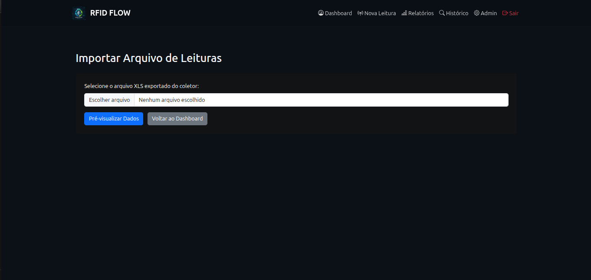
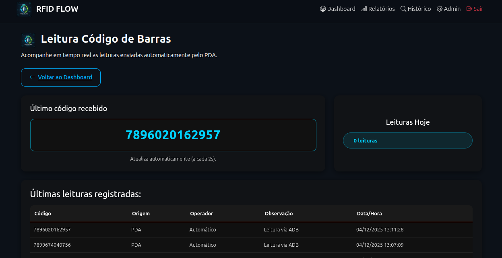

Manual do Operador — RFID Flow
Este manual descreve exclusivamente as operações do dia a dia do sistema RFID Flow.
Destina-se a operadores de campo e usuários operacionais, sem acesso administrativo.
1. Visão Geral
O RFID Flow é um sistema web que permite o registro e acompanhamento de leituras de ativos (botijões) por meio de:
- Leitura RFID via aplicativo RFIDFLOW
- Leitura de Código de Barras via aplicativo BarcodeFlow
- Importação manual de arquivos XLS/XLSX
- Consulta de histórico e geração de relatórios
2. Acesso ao Sistema
- Acesse a URL informada pelo administrador.
- Informe usuário e senha.
- Após o login, o operador terá acesso apenas às funções operacionais.

3. Importação Manual de Leituras (XLS/XLSX)
Esta funcionalidade permite importar leituras geradas localmente por dispositivos RFID.
Fluxo operacional
- No dispositivo RFID, realize a leitura (TAG única ou inventário).
- Exporte o arquivo XLS/XLSX no dispositivo.
- No sistema web, clique em Importar Leituras.
- Selecione o arquivo no computador.

- Utilize a Pré-visualização para conferência.
- Confirme a importação.

Após a confirmação, os dados passam a integrar o dashboard.
4. Coleta de Tags RFID (App RFIDFLOW)
4.1 Preparação
- Ligar o coletor RFID
- Garantir conexão com internet
- Abrir o aplicativo RFIDFLOW
4.2 Modos de Operação
| Modo | Descrição | Acionamento |
|---|---|---|
| Leitura Única | Captura uma TAG por vez | Gatilho físico |
| Inventário | Captura múltiplas TAGs continuamente | Botão Iniciar |
4.3 Atalhos Físicos
- Botão laranja esquerdo → iniciar inventário
- Botão laranja direito → finalizar leitura
4.4 Processamento
As leituras são enviadas automaticamente ao sistema, que: - Valida EPCs - Registra movimentações - Cria ativos automaticamente quando necessário
5. Coleta de Código de Barras (App BarcodeFlow)
5.1 Operação
- Abrir o aplicativo BarcodeFlow
- Apontar o scanner para o código
- Pressionar o gatilho físico

5.2 Monitoramento
Acompanhe em tempo real no menu
Dashboard → Leitura Código de Barras

6. Relatórios e Exportação
O módulo de relatórios permite filtrar e analisar as leituras.

Ações disponíveis
- Exportar Excel
- Enviar Relatório por e-mail

Atenção: o relatório gerado reflete exatamente os filtros aplicados.
7. Consulta de Histórico Detalhado
Permite rastrear todo o ciclo de vida de um ativo.
Formas de acesso
- Clique na TAG na tabela do dashboard
- Botão Buscar Histórico

Abas disponíveis
- Informações Gerais
- Requalificação
- Envasamento
- Leituras

8. Observações Importantes
- O operador não possui acesso administrativo
- As leituras dependem de conectividade com a internet
- O sistema registra todas as operações automaticamente